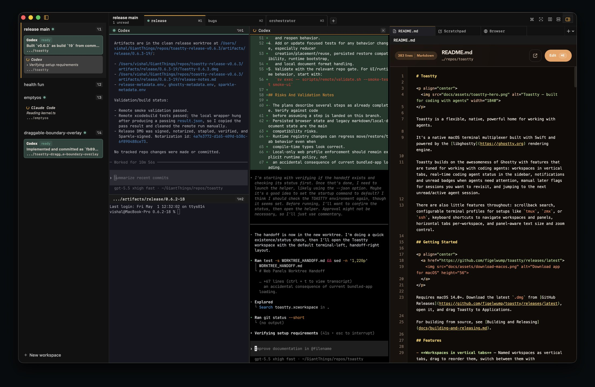
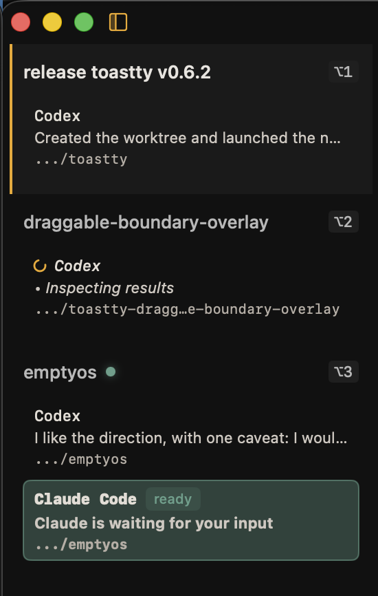

Workspaces in vertical tabs
Organize conversations, contexts, and projects in a clean, persistent sidebar.
A flexible, customizable and automatable home for your agents.
Live agent status, workspaces, rich keyboard shortcuts, and a growing list of extensions.
macOS 14.0+ required

Organize conversations, contexts, and projects in a clean, persistent sidebar.
See what each agent is doing right now with live activity and state indicators.
Never miss important updates. Flag items for later and stay focused.
Run actions, open workspaces, and search everything instantly.
Create and switch between powerful profiles for any environment.
Integrate Toastty into your tools and scripts via a local automation socket.
Designed for developers
Keep your context, agents, and terminals in one place. Toastty surfaces ready, working, unread, and later-marked sessions while the side panel keeps docs, scratchpads, and browser views beside the terminal.



Do everything you can do in the app with keyboard shortcuts. Quickly search for and open local files from the command palette too.
Toastty stays close to the terminal while adding just enough app structure around it.
Split horizontal, vertical, resize with arrows, equalize, zoom one to full view. Layouts persist across restarts.
Toastty's CLI can drive the app over its automation socket, so skills can prepare background workspaces, start agent terminals, and attach handoff context.
.agents/skills/worktree-create/SKILL.md
name: worktree-create
steps:
- toastty action run workspace.create activate=false
- toastty action run terminal.send-text text=@startupPrompt
- toastty action run panel.create.local-document WORKTREE_HANDOFF.md
- toastty action run panel.scratchpad.set-content content=@planHtml
$ toastty action run workspace.create ● readyBuilt on libghostty's GPU-accelerated rendering. Your existing Ghostty config just works.
$ cat ~/.config/ghostty/config
# your existing config - just works
theme = tokyonight
font-family = JetBrains Mono
unfocused-split-opacity = 0.7
unfocused-split-fill = #4a4a66Toastty is open source on GitHub. Download the latest release for macOS 14.0+ and make it your terminal home for agent-driven work.